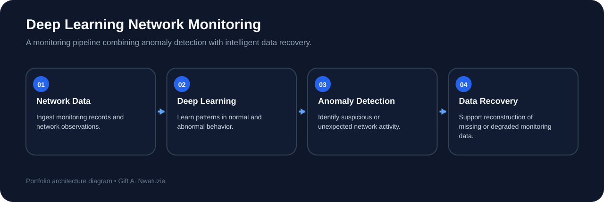

Anomaly Detection
Developed deep learning approaches for identifying abnormal behavior in monitored network environments.
CYBERSECURITY • DEEP LEARNING • ANOMALY DETECTION • DATA RECOVERY
A deep learning-based system for detecting abnormal network behavior and supporting intelligent data recovery in network-monitoring environments.
THE PROBLEM
Modern network environments generate continuous streams of telemetry and monitoring information. Abnormal behavior, incomplete observations, or degraded data can reduce visibility and make it harder to detect threats or diagnose system conditions. This project explored deep learning methods for both anomaly detection and intelligent data recovery within network-monitoring workflows.
BRANCHED SYSTEM WORKFLOW

TECHNICAL CONTRIBUTIONS
Developed deep learning approaches for identifying abnormal behavior in monitored network environments.
Explored intelligent recovery methods for reconstructing missing or degraded network-monitoring information.
Evaluated predictive performance, recovery quality, and operational reliability using benchmark cybersecurity datasets.
Framed the problem as both a security and systems-reliability challenge rather than treating detection accuracy as the only objective.
WHY THIS MATTERS
Network security tools are only as useful as the data they can observe. A model that detects anomalies effectively may still be limited if monitoring data is incomplete or unreliable. Combining anomaly detection with intelligent recovery creates a broader systems perspective that supports more dependable security monitoring.
ENGINEERING TAKEAWAY
This work strengthened my experience applying machine learning to operational cybersecurity problems and reinforced the importance of evaluating systems across multiple dimensions: predictive performance, recovery behavior, data quality, and reliability.
EXPLORE MORE